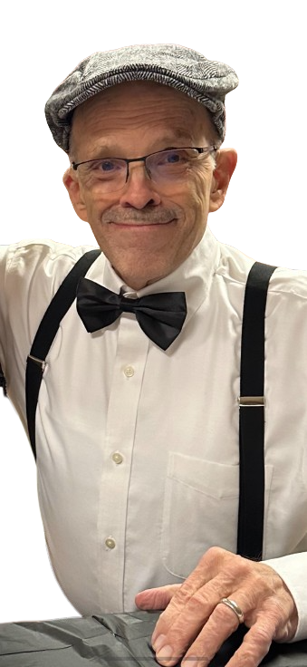

Andrew V. Inge, Jr.
1947 — 2023
Dr. Andrew V. Inge, Jr. 76, went home to be with his Lord and Savior on Saturday, September 9, 2023 at his home in Nazareth, PA, after a long illness. He was the husband of Pamela Markle Inge. They would have celebrated their 17th wedding anniversary in October. Andy was predeceased by his first wife, Arteve Bartholomew Inge. Born in 1947, Andy was the son of Andrew Vaiden Inge and Emily Harrison Inge. He was a graduate of University of Connecticut and Temple Dental School. A dentist of approximately 40 years he spent most of that time in the Easton/Nazareth area. He was known and appreciated by his patients as someone who had a gentle touch, compassion, and endless patience. He retired from the profession in 2019.
Known affectionately to his grandkids, as Pop I, he was a master storyteller, he loved to watch the kids’ soccer games, playing lots of board games, and eating Oreos. All the kids will remember us sitting around having a glass of wine and playing cards, especially Cribbage with his brother, Edward, and his sons. The family has many memories of visiting wineries and sitting around sharing stories. His ability to love was limitless and that love changed hundreds of lives.
Over the years, he served as an elder, taught Sunday school, and went on countless church camping trips. Andy loved to cross-country ski, enjoyed hiking in Jacobsburg Park, listening to podcasts, and one of his most cherished vacations was going to Norfolk, VA to visit his brother, Edward, and spend time on the water on Edward’s sailboat.
Survivors include: His wife Pam, daughter Sara, son Stephen (Carrie) and children Vaiden and Lila, son Peter, son Brandon, and son Adam (Jennifer) and children Matthew, Kyra, Jackson, and Cameron. Countless family throughout the Southern states were an active part of Andy’s life.
Throughout this past year Andy had battled with mysterious pulmonary infections that could not be diagnosed correctly. Finally, in May, 2023 he was diagnosed with a rare fungal infection, Histoplasmosis. As we made this journey in discovering this infection we were the center of many discussions with healthcare providers wanting to learn about this rare infection. Our hope is that continued research will start educating the public about fungal infections. In lieu of flowers, the family would appreciate a donation to fungalinfectiontrust.org.
We especially want to thank St Luke’s Pulmonology and St Luke’s Infectious Disease for their dedication, compassion, and tireless effort during this process.
A Celebration of Life service will be held on September 30, 2023, at Hope Lutheran Church in Tatamy, PA from 11:00-3:00 pm with a private burial in Norfolk, VA.